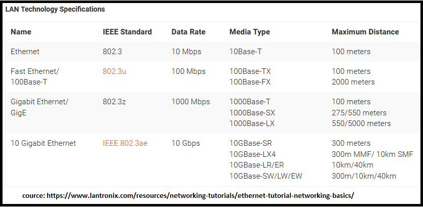
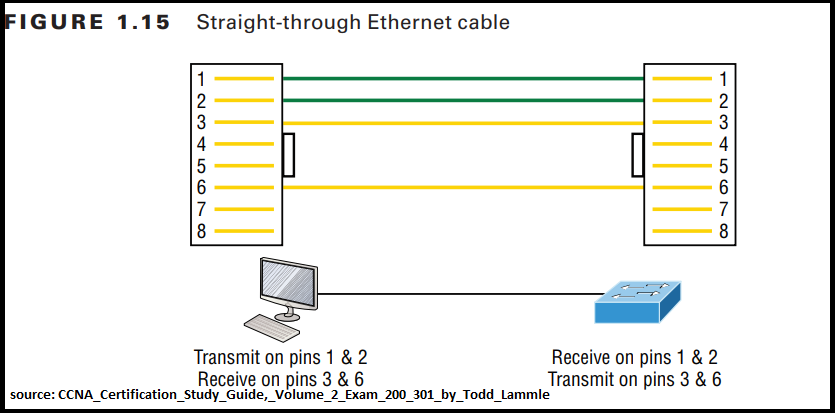
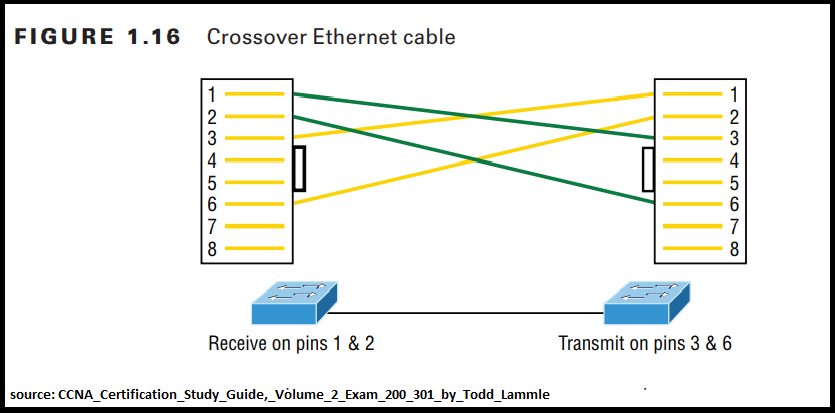
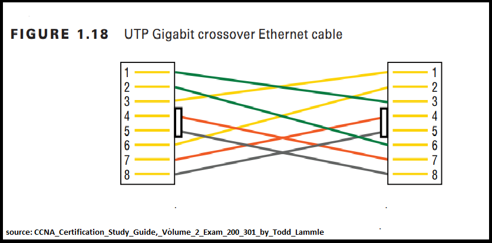
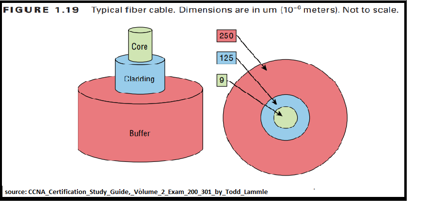

Cables and Interfaces
Ethernet is a collection of network protocols/standards.

Rj45 -> Rj = Registered Jack
Every Ethernet cable have attenuation (AKA loss of signal strength) which measured in dB.
Bits and Bytes
8bit=1byte
Speed is measured in bits per seconds (kbps,Mbps,Gbps, ect) Not byte per second.
Ethernet Standards (copper)
Base=baseband T-Twisted pair 10Base-T
UTP - Unshielded Twister pair (Twists protect against Electromagnetic Interference(EMI))
Key points about 10Base-T, 100Base-T(fastEthernet)
- USE ONLY TWO PAIRS (4 WIRES OR 4 PINS)
Straight-through cable
When connecting a PC and a switch (or a router and a switch) use 1,2,3 and 6 pins only.
[Use to connect Host to switch or hub / Router to switch or hub]
PC(Router,Firewall) -> pin 1,2 -> Transmit data (Tx)
-> pin 3,6 -> Receive data (Rx)
Switch -> pin 1,2 -> Receive data (Rx)
-> pin 3,6 -> Transmit data (Tx)

Crossover cable
When connecting two PCs (or two routers or two switches) together.
- Switch to switch
- Hub to hub
- Host to host
- Hub to switch
- Router direct to host
- Router to router
Leftside (switch1) -> pin 1,2 -> Receive data (Rx) -> pin 3,6 ->Transmit data (Tx)
Rightside (switch2) -> pin 1,2 -> Receive data (Rx) -> pin 3,6 ->Transmit data (Tx)

Modern networking devices have a feature call "Auto MDI-X" which allows devices to identify which pins and wires their neighbour is using to transmitting and receiving data and adjust their own operations to match. Ref: Jeremy's IT Lab
1000Base-T,10GBase-T
USE ALL 4 PAIRS(8 WIRES OR 8 PINS) EACH PAIR IS BI-DIRECTIONAL.(EACH PAIR CAN TRANSMIT OR RECEIVE DATA)

Fiber-Optic Connections
Very fast data transmission.
Made of glass(/plastic).
Very thin.
Long distance support.
Use light/laser to transmit data.
The tighter the cladding, the smaller the core; the smaller the core, the less light sent through it, but it can go faster and farther.

SFP ports SFP transceiver (Small Form-Factor Pluggable)
Fiber-Optic pigtail
Pigtail is a piece of fiber with connector installed on one end only and used for terminating fiber by fusion splicing the fiber with a pigtail.
-
Fiber optic Pigtail Types
Categorized by the connector and fiber types. Connector types: SC,ST,LC,FC,SMA,MU Fiber Type: Single mode, Multimode Ex: SC single mode Pigtail,ST multimode pigtail https://www.youtube.com/watch?v=pgRbLIE0zao
Single mode vs Multimode fiber
| SIngle mode | Multimode |
|---|---|
| More expensive | Less expensive than single mode. |
| Has tighter cladding | Has less tighter cladding compaired to single mode fiber. |
| Smaller code | Larger core compaired to single mode fiber. |
| More distance | Less distance |
Fiber-Optic cable standerds
IEEE 802.3 10-Gbps Fiber Standards
| Standard | Cable type | Max Distance |
|---|---|---|
| 10GBASE-S | MM | 400m |
| 10GBASE-LX4 | MM | 300m |
| 10GBASE-LR | SM | 10km |
| 10GBASE-E | SM | 30km |
UTP vs Fiber Optic
| UTP | Fiber |
|---|---|
| Less speed | More speed |
| Support less bandwidth and distance. | Support more bandwidth and distance. |
| Use copper as transmission medium. | Use glass/plastic as transmission medium. |
PoE (Power over Ethernet) [802.3af, 802.3at]
PoE = 802.3af
PoE+ = 802.3at
- This technology discribe a system for transmitting power, along with data using standard twisted pair cables.